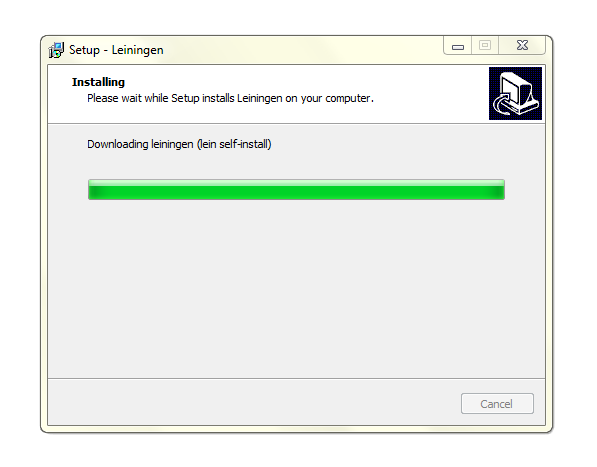
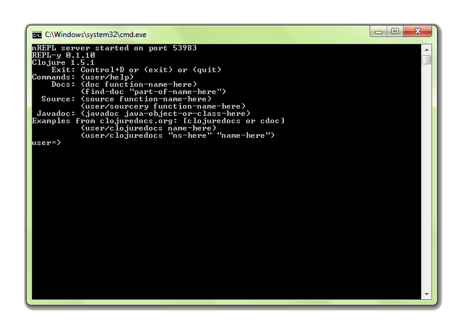

Installation
leiningen-win-installer
beta1
Download and install the Java SE 7 JDK.
Download and install leiningen-win-installer beta1 .
Learning more
Now that you have Leiningen installed, check out these resources to learn more about getting started with Leiningen and Clojure:
clojure-doc.org is a community documentation project for the Clojure programming language. Now that you have Leiningen installed, check out the Getting Started section of the site.
leiningen.org is the official website for Leiningen. Try out the Leiningen Tutorial
clojure.org is the official website for the Clojure programming language.
clojuredocs.org provides reference documentation and examples for the core Clojure libraries.
Technology
Leiningen
Leiningen is an essential tool creating, building, and automating Clojure projects.
Clojure
Clojure is a dynamic functional programming language for the Java platform.
Detailed installation
Install location
Install location
The default install location is %USERPROFILE%\.lein. Files related to the installer will be copied to %USERPROFILE%\.lein\bin
This location is recommended, because it is the location that Leiningen writes its files, and Leiningen requires write-access to itself in order to perform upgrades.
JDK Location
The installer requires that you have a Java Development Kit installed before attempting installation.
The installer will display a list of JDKs installed on your system, or you may specify a custom path. If you have already installed Leiningen, then your previous location may be pre-selected by default.
Installing
During the install process, the latest stable version of Leiningen will be download. This requires an internet connection, and may take a minute.
Clojure REPL
The installer will install a shortcut to a Clojure REPL on your startup menu, and may start it after installation.
From this REPL you can try entering Clojure code. Try it out:
user=> (println (+ 2 3))
5
Configuring Leiningen

If you install a newer version of the JDK, you might want to reconfigure Leiningen to use the new version. From the start menu select the Configure Leiningen Installation option, which will run the installer and will allow you to change the JDK path. This option will also ensure that you are using the latest stable version of Leiningen.
Leiningen supports a wide selection of plugins. To install plugin, edit your %USERPROFILE%\.lein\profiles.clj file. A shortcut to your profiles.clj file is available via the start menu.
What the installer does
The installer makes curl.exe available so that leiningen can download and upgrade files.
The installer downloads and installs the latest lein.bat from github.
lein.bat is added to your PATH variable.
LEIN_JAVA_CMD is set to point to your selected JDK, and the :java-cmd property is set in your user profile in profiles.clj.
lein self-install is run to install the Leiningen JAR file.
The uninstaller will remove the files that were installed, together with the Leiningen self-installs and search indexes; the environment variables that were set, and the additions to the PATH.
Source code
The installer is produced using InnoSetup.
Source code for the installer is available at: http://bitbucket.org/djpowell/leiningen-win-installer
Support
You can raise issues and submit patches at the project's BitBucket site: http://bitbucket.org/djpowell/leiningen-win-installer
You can also send me a message via BitBucket, or via GitHub.